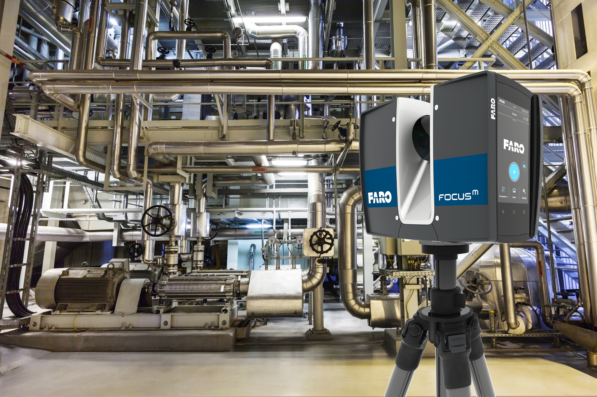
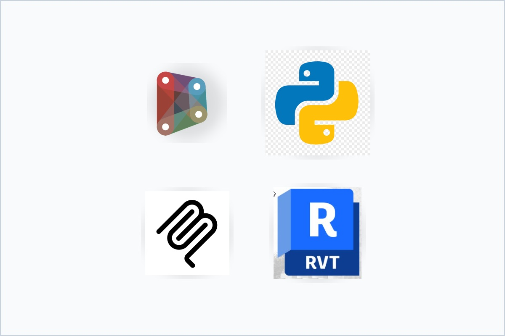

BIM, VDC & IT Services
Serving contractors, designers and owners in Orlando and across Central Florida. Transparent, reliable, and cost-effective solutions with extensive experience across design, construction, and as-built documentation.
BIM & VDC Services
Comprehensive Building Information Modeling and Virtual Design & Construction services tailored to your project's needs. Our unique perspective across contractor, designer, owner, and IT roles ensures we understand your challenges from all angles.
Design Services
- Revit Family Creation (4D/5D embedded data, parametric design)
- Revit Template Development (project-specific, sector-tailored standards)
- Model Health Reports (error resolution, orphaned families, system repair)
- Navisworks Clash Reports (conflict detection, pre-construction issue resolution)
Contractor Services
- LOD 500 Modeling (manufacturer specifications, shop drawing integration)
- VDC Coordination (RFI identification, content remodeling, as-built updates)
- 2D Backflow to Client (shop drawing backgrounds, coordination sets)
- Multi-subcontractor coordination (proven with 8+ subcontractors on Tampa Airport MTCE)
Owner Services
- Constructability Review (system integration analysis, space requirements verification)
- Change Order Prevention & Reduction (pre-construction conflict resolution)
- Model-Derived QTO (accurate quantity takeoffs from BIM models)
- Project lifecycle support from design through facility management

Key Capabilities
Underground Scope We Have Modeled
Civil Underground BIM & Utility Coordination
Most BIM providers stop at the building line. We do not. EBIC models and coordinates the wet and dry utilities below the slab and across the site, so that underground conflicts are found in the model instead of in the trench.
Underground rework is among the most expensive failures on a job: crews are mobilized, excavation is open, and a single unresolved crossing between storm and sanitary can stop a site for days. Coordinating that scope against the building model before anyone digs is the cheapest insurance on the project.
What We Deliver
- Underground utility modeling from civil drawings and survey data
- Clash detection between site utilities, foundations, and building systems
- Storm, sanitary, potable, fire water and FDC coordination in a single federated model
- Civil to Revit and Navisworks workflow integration (Civil 3D surfaces and alignments)
- Utility crossing and cover verification prior to excavation
- As-built underground documentation from survey points and field data
- Coordination sets and 2D backflow for site subcontractors
Proven at scale: EBIC coordinated civil underground utilities across Universal Epic Universe, including Celestial Park (GC: Yates, Sub: Phillips & Jordan) and Dragon Land Civil (GC: Hensel Phelps, Sub: Phillips & Jordan).
BIM Manager as a Service
A full-time BIM manager is a six-figure hire. Most contractors and design firms do not need one full time, but they do need one. EBIC provides an experienced BIM manager on a monthly retainer, embedded in your team and accountable for your standards, your models, and your coordination calendar.
You get continuity without the headcount: the same person every week, who knows your projects, owns your templates, runs your coordination meetings, and is reachable when a model breaks the day before a deadline.
What the Retainer Covers
- BIM Execution Plan authoring and enforcement
- Company and project template ownership and version control
- Weekly clash detection cycles and coordination meeting facilitation
- Model health monitoring, audits and remediation
- Standards development, content library management and staff mentoring
- Software, licensing and workflow guidance
- Owner and general contractor BIM deliverable compliance
EBIC currently operates as the acting BIM manager for multiple firms simultaneously, at a fraction of the cost of a single in-house hire.
Who This Is For
- Subcontractors newly required to deliver BIM
- Design firms without a dedicated BIM lead
- General contractors scaling coordination across jobs
- Teams between BIM manager hires
- Firms whose standards have drifted project to project

Project Experience
30+ Reality Capture Projects including:
- Kennedy Space Center facilities
- USAF Stadium complex
- Military installations (Pacific region)
- Commercial and industrial facilities
- Historical building documentation
Reality Capture & Scan-to-BIM
Precision FARO laser scanning services delivering millimeter-accurate as-built documentation. We transform point cloud data into fast, actionable information that drives better project decisions and outcomes.
Our Services
- FARO Laser Scanning (high-accuracy point cloud capture)
- Point Cloud Processing (fast, actionable data delivery)
- As-Built Documentation (millimeter accuracy for renovations and retrofits)
- CSV Survey Points Integration (seamless data workflow)
- Scan-to-Revit Coordination (accurate BIM model development)
- Clash Detection with Design Models (identify conflicts early)
- Industrial Facility Mapping (complex mechanical and process systems)
- Historical Building Documentation (preservation and renovation support)
Fast turnaround times with actionable data that helps you make informed decisions quickly.
Training
Expert training programs designed to build your team's skills and optimize BIM workflows. Our training is based on real-world experience across design, construction, and owner perspectives, ensuring practical knowledge that translates directly to your projects.
Training Programs
- Expert Revit Training (from fundamentals to advanced parametric design)
- Navisworks Training (clash detection, 4D sequencing, coordination workflows)
- BIM Workflow Development (customized processes for your organization)
- Team Skill Building (cross-discipline collaboration strategies)
- Project-Specific Training (tailored to your current projects and standards)
- Best Practices Implementation (industry standards and proven methodologies)
Why Choose EBIC Training?
- Instructors with 18+ years of hands-on BIM experience
- Understanding from contractor, designer, and owner perspectives
- Customized curriculum based on your specific needs
- Practical, project-based learning approach
- Ongoing support beyond initial training sessions

Training Formats
- On-site training at your facility
- Remote/virtual training sessions
- Hybrid training programs
- One-on-one coaching
- Group workshops
- Project-embedded training

Technology Stack
- Revit API (C#/.NET development)
- Dynamo scripting and custom nodes
- Python automation
- Model Context Protocol (MCP)
- Enterprise AI orchestration
- Cloud infrastructure integration
- Database and data processing
Software Development & AI Automation
Custom software development and AI-powered automation solutions that optimize BIM workflows and unlock new capabilities. Our open-source philosophy drives transparent, reliable, and cost-effective solutions tailored to your specific needs.
AI That Amplifies Your Team
Our AI solutions are designed to enhance and empower your existing workforce, not replace it. By automating repetitive, time-consuming tasks, we free your skilled professionals to focus on strategic thinking, creative problem-solving, and high-value decision-making. The result: your team accomplishes more, delivers better outcomes, and maintains higher job satisfaction -- all without adding headcount. We believe the future of construction technology is human expertise amplified by intelligent automation, creating opportunities for professional growth while dramatically increasing organizational capacity.
Development Services
- Custom Revit Development (plugins, add-ins, parametric tools)
- AI-Powered Workflow Automation (eliminate repetitive tasks)
- Enterprise BIM Solutions (scalable systems for large organizations)
- Process Optimization Tools (streamline your unique workflows)
- API Development and Integration (connect BIM with other systems)
- Data Processing and Analytics (extract insights from BIM data)
- Cloud Infrastructure Development (modern, scalable architecture)
Open-Source Portfolio: Our published repositories and production tools demonstrate capability to build sophisticated, integrated solutions for complex technical challenges.
Why Choose EBIC for Development?
- Deep understanding of BIM workflows from contractor, designer, and owner perspectives
- Open-source philosophy ensures transparent, maintainable solutions
- Proven track record with enterprise-scale implementations
- Focus on practical, production-ready solutions
- Ongoing support and continuous improvement
IT Services & Managed Support
The "IT" in Ehrig BIM & IT Consultation is not decorative. We keep small and mid-sized businesses running: networks, workstations, servers, backups, and the high-performance machines that engineering and design work actually depend on.
Most IT providers do not understand why a Revit workstation behaves differently from an office PC, why a coordination model chokes a network share, or what a FARO scan does to your storage plan. We support both sides because we work on both sides.
Managed IT
- Network design, maintenance and troubleshooting
- Workstation deployment, imaging and support
- Server, NAS and storage configuration
- Backup, disaster recovery and business continuity
- Security hardening, patching and endpoint protection
- Vendor, license and software asset management
- High-performance workstation specification for CAD, BIM and reality capture
AI Setup & Integration
- Practical AI assessment: what is worth automating and what is not
- Local and private AI deployment for sensitive business data
- AI tooling integration with existing business systems
- Staff enablement and workflow redesign around AI assistance
Available hourly for project work or on a monthly managed-services agreement for ongoing coverage.
Engagement Models
- Hourly / as-needed support
- Monthly managed-services retainer
- Project-based build-outs and migrations
- Emergency and after-hours response
Who We Support
- Engineering, design and construction firms
- Robotics and technology companies
- Professional services offices
- Small businesses without in-house IT
Installation Experience
8+ military and federal installations, including:
- Okinawa, Japan
- Rota, Spain
- Saipan and Tinian
- Tyndall Air Force Base
- Kennedy Space Center facilities
- USAF stadium complex
Standards We Work To
- NAVFAC BIM requirements
- Unified Facilities Criteria (UFC)
- COBie deliverables
- Owner-specific BIM execution plans
Federal & NAVFAC BIM Programs
Federal work does not fail on modeling ability. It fails on deliverable compliance: the wrong file structure, missing COBie data, a BIM execution plan that does not match the contract. EBIC has delivered BIM on military installations across the Pacific and the southeastern United States, and understands what the government actually asks for at closeout.
Program Support
- NAVFAC and UFC BIM deliverable compliance review
- BIM execution planning for federal contracts
- COBie data structuring and validation
- Scan-to-BIM as-built documentation for existing federal facilities
- Coordination support for MACC and IDIQ task orders
- Teaming support for contractors pursuing federal BIM scope
Security-cleared pathways available. EBIC is actively pursuing federal BIM program work and welcomes teaming conversations with prime contractors.
Ready to Elevate Your Project?
Let's discuss how our comprehensive services can add value to your next initiative.
Ehrig BIM & IT Consultation, Inc.
403 South Edgemon Avenue, Winter Springs, FL 32708
(407) 234-3445